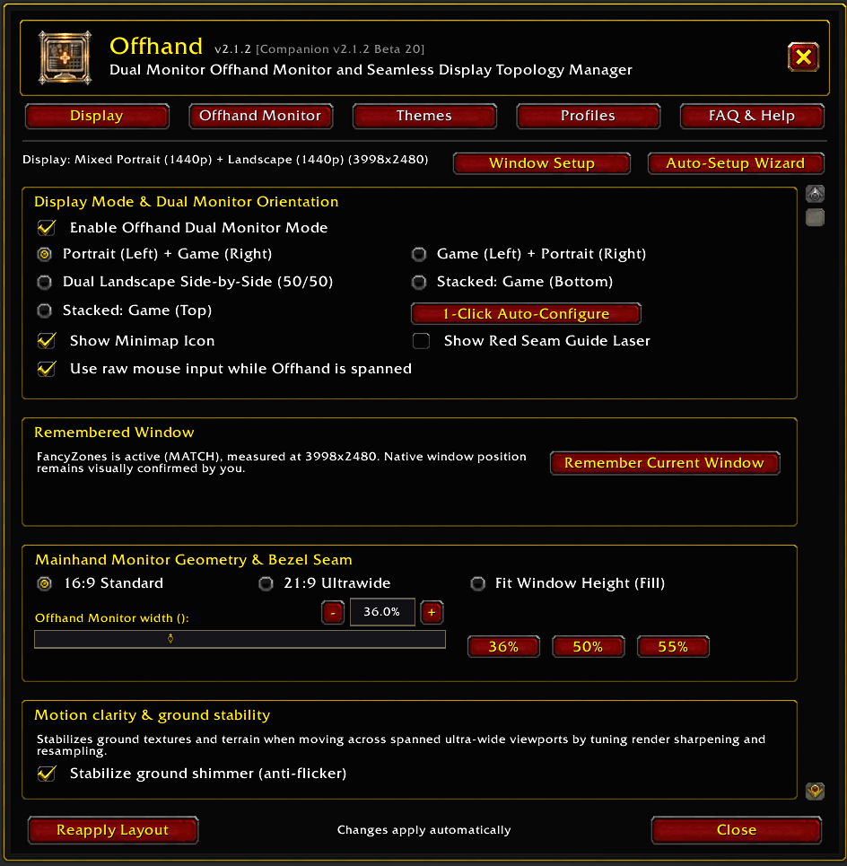
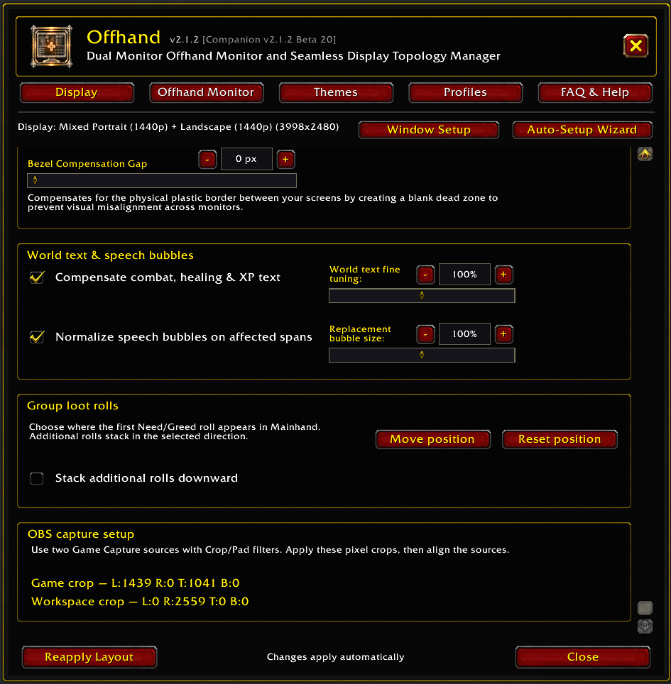
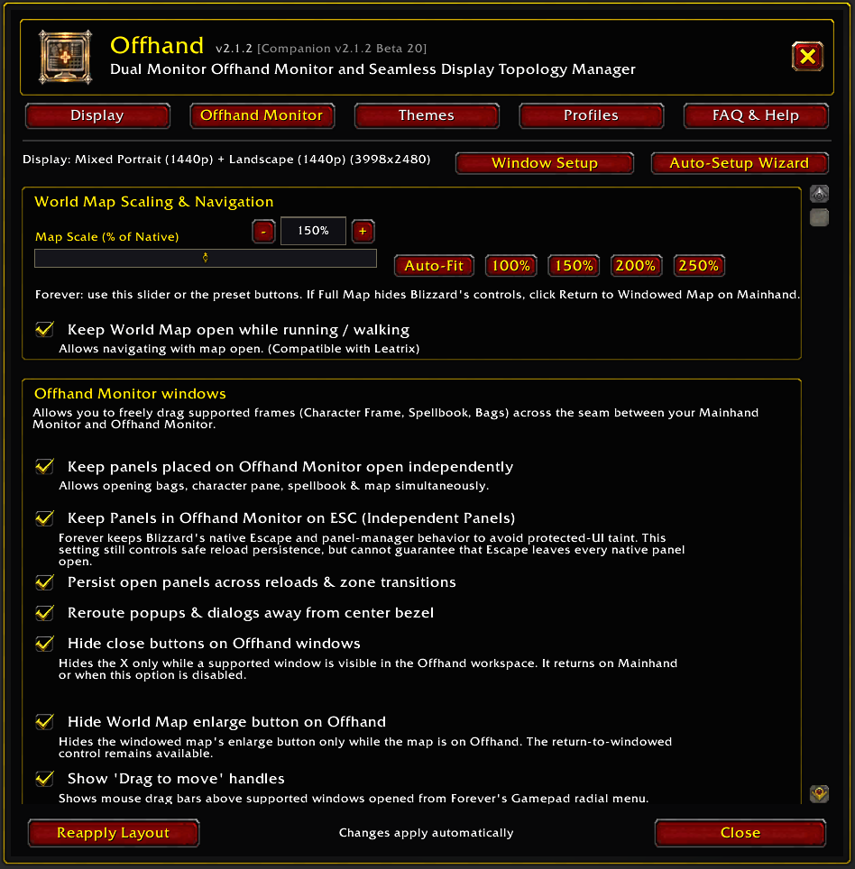
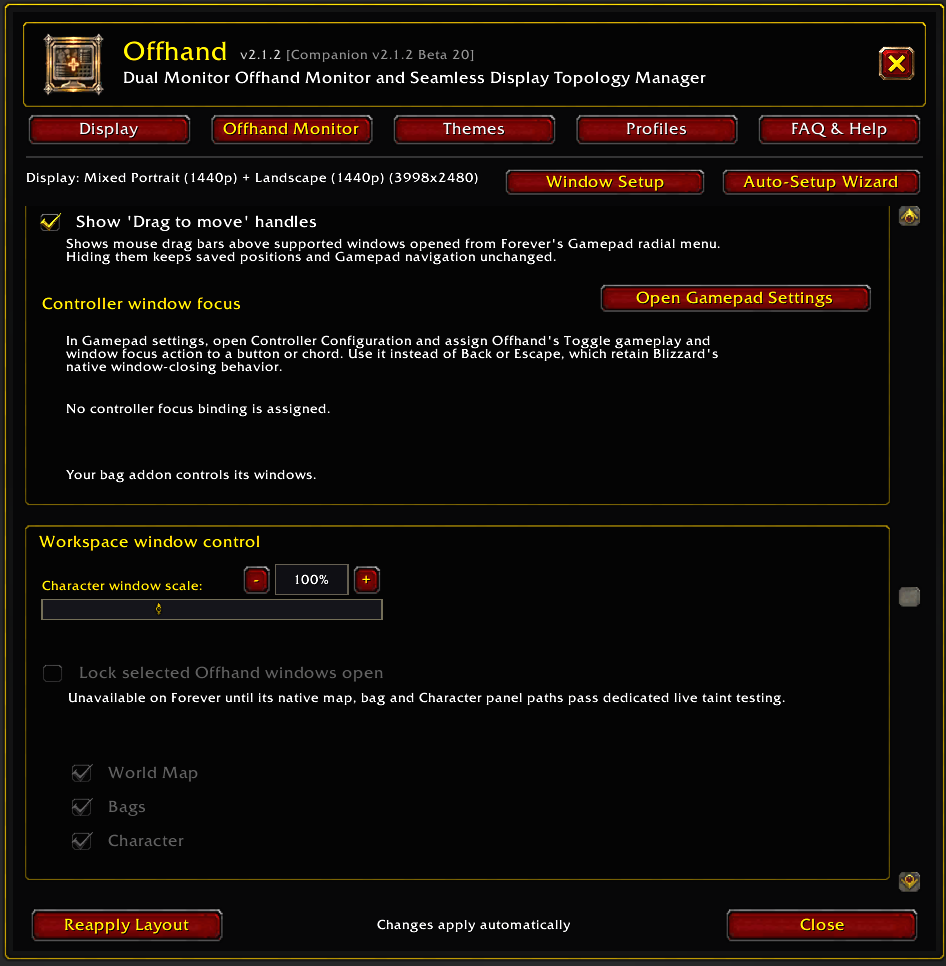
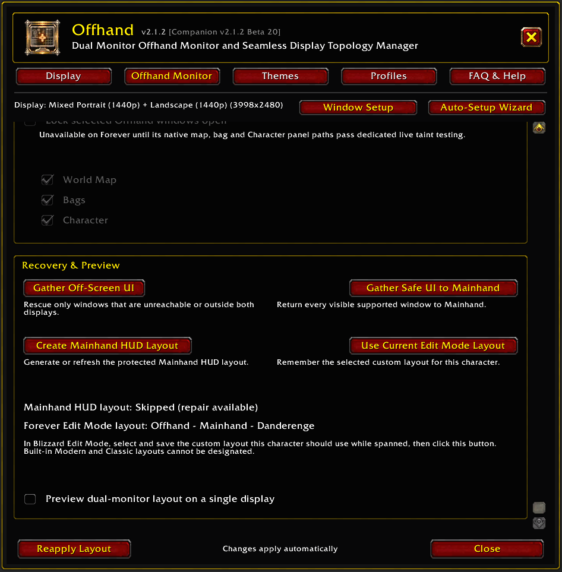
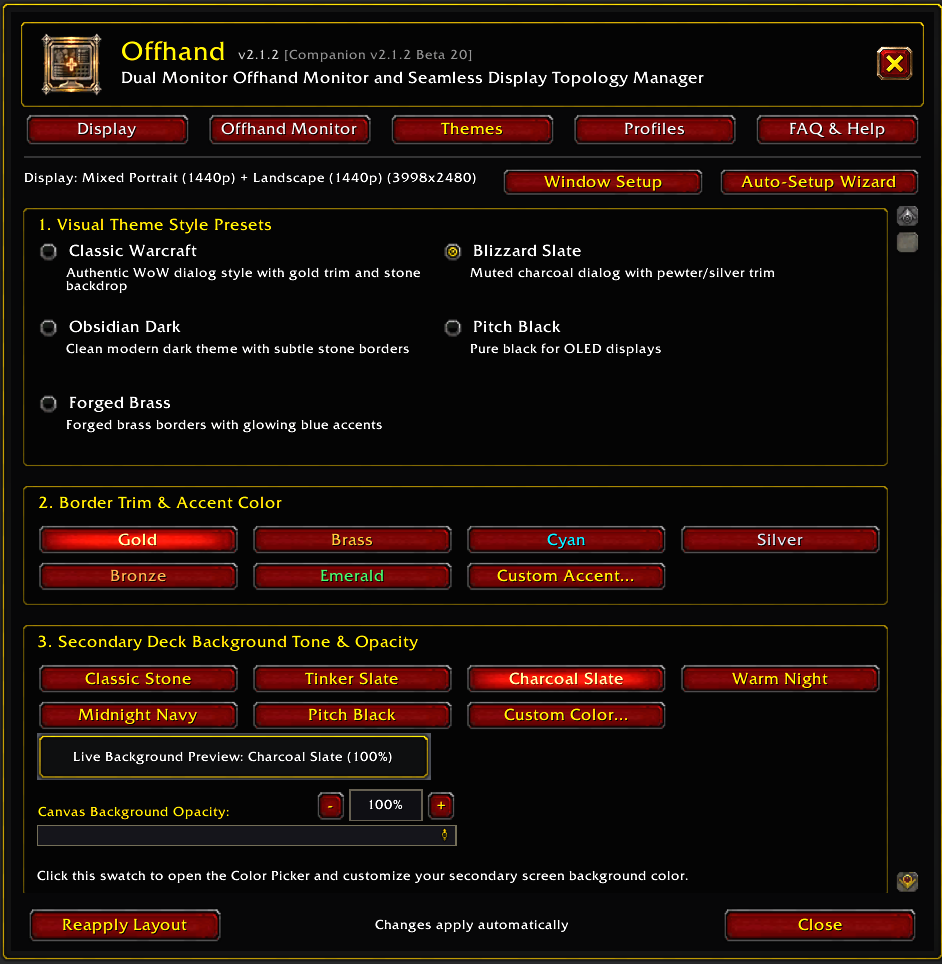
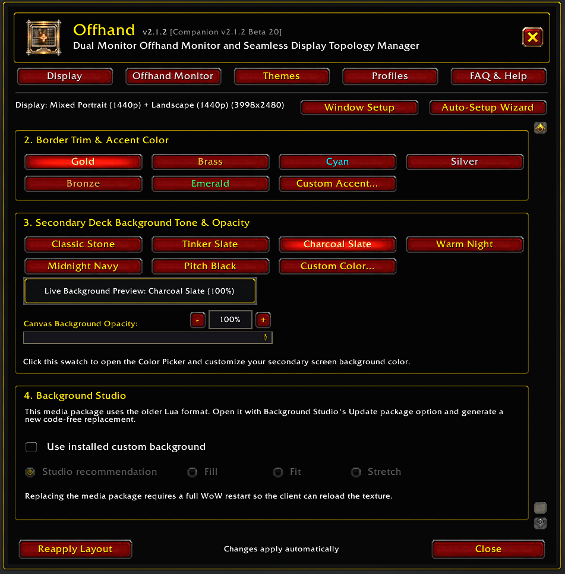
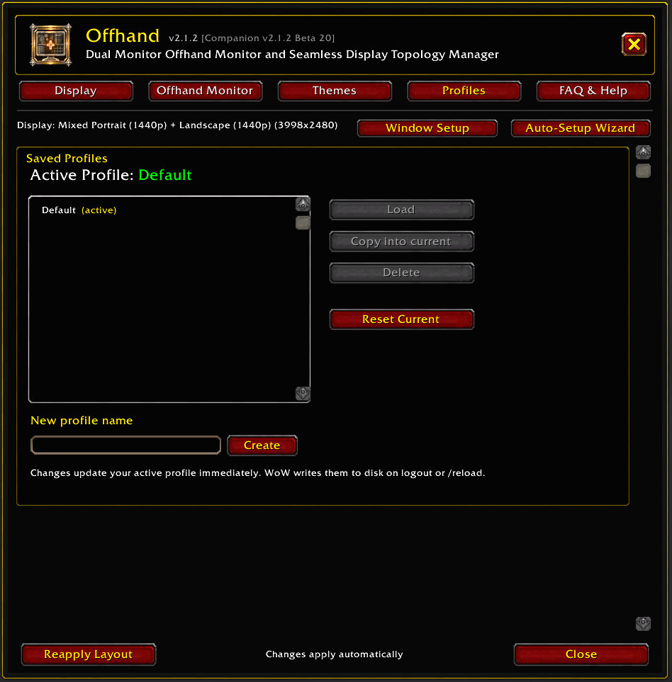
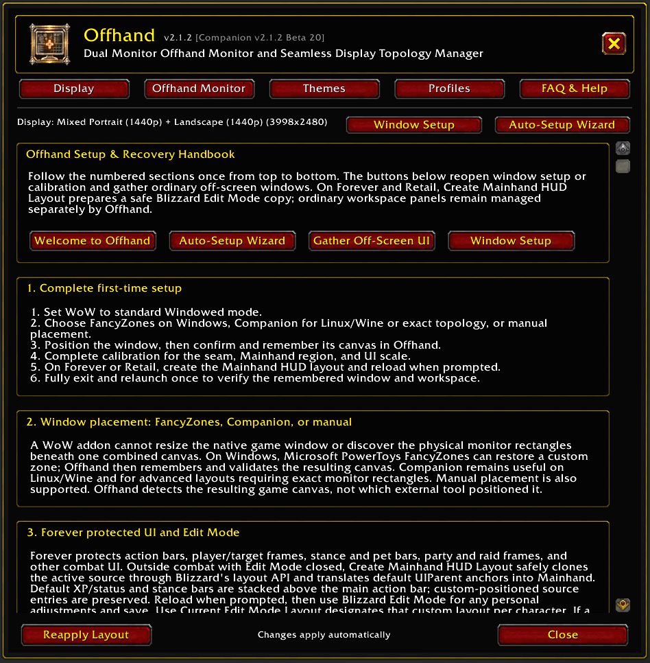

1
Choose your placement method
Enter the game world and open /offhand guide. Select Use FancyZones, Use Companion, or Configure Manually. For software paths, install the tool if needed, then choose Already installed.
Open the guide with /offhand guide. It remains available later from Help & recovery.
Enter the game world and open /offhand guide. Select Use FancyZones, Use Companion, or Configure Manually. For software paths, install the tool if needed, then choose Already installed.
Click Set to Windowed. If it is already selected, continue with Place WoW. If your client cannot apply the change automatically, use Open display settings, select Windowed and apply. Windowed (Fullscreen) is a different mode.
Companion: while in the game world, click Span WoW Now, return to the guide, click Reload UI, then Confirm placement. FancyZones/manual: position the window, visually check it, click Confirm placement, then Remember Window in the dialog. Maximizing one screen does not replace spanning.
Click Start Calibration. Apply the detected recommendation, check the Mainhand side and aspect ratio, align the red seam guide with the bezel, then choose a comfortable UI scale.
Where the final HUD step is available, leave combat and close Edit Mode before clicking Create Mainhand HUD Layout. Reload when prompted. On clients without that step, click Finish Setup.
Move supported maps, bags, Character panels and chat onto Offhand. Use Edit Mode or your HUD addon's own controls for protected frames. Exit WoW normally, relaunch, restore the intended span and check that your layout returns.


/offhand. Use Auto-Setup Wizard to repeat calibration, or use the Offhand Monitor & Map tab's Recovery & Preview controls for targeted repair.Offhand manages ordinary workspace windows. Blizzard Edit Mode remains responsible for protected combat controls.
World Map, Character panel, combined backpack, chat, and supported addon panels can live on the Offhand Monitor. Drag supported frames by their headers and let Offhand remember their positions.
Action bars, unit frames, stance and pet bars, party and raid frames, and other protected combat UI remain under Blizzard ownership. Customize these through Edit Mode after Offhand creates the Mainhand-safe layout.
Outside combat with Edit Mode closed, select Create Mainhand HUD Layout. Offhand clones the active Blizzard layout and moves default HUD anchors into Mainhand while preserving custom-positioned source entries.
Reload when prompted so the generated layout and the rest of the Offhand workspace start from a clean state.
Open Blizzard Edit Mode, fine-tune the generated layout, and save it. Keep protected controls inside the visible Mainhand region.
After selecting and saving the custom layout in Edit Mode, return to Offhand Monitor & Map → Recovery & Preview and select Use Current Edit Mode Layout. Built-in Modern and Classic layouts cannot be designated.

Type /offhand or /oh. Changes update the active profile immediately and WoW writes them to disk on logout or /reload.
Use this tab for monitor orientation, Mainhand geometry, the remembered independent window, camera and UI scale, world text, group-loot placement, and advanced bezel compensation.
Use this tab for the World Map, ordinary workspace windows, persistence, recovery, and supported window behavior.
Choose the settings-window style, trim colour, canvas background, and opacity. The Background Studio card reports whether an installed Offhand_UserMedia package is ready.
Create separate groups of Offhand settings for different characters, display arrangements, or play styles. The selected profile is character-specific, while its settings update as you make changes.
This is the in-game setup and recovery handbook. It reopens the first-time guide, calibration, and common recovery actions without requiring you to return to the website during play.
/offhand guideFirst-time guide/offhand wizardCalibration wizard/offhand diagSupport diagnosticsOpen only the tab you need. Each image links to the full-size capture so labels and controls remain readable.









Offhand validates the game canvas first, then restores panels and applies the saved layout.
Launch WoW, place it into the saved Canvas zone if Windows did not restore it automatically, and let Offhand validate the remembered dimensions.
Apply the saved span before opening workspace panels. Companion may be closed afterward unless you want automatic spanning or active display recovery.
Resize and position WoW to the remembered canvas. Only select Remember Current Window again after visually verifying the complete placement.
Correct the window before rebuilding in-game placement. Offhand keeps saved panel positions when it falls back to safe single-screen geometry.
Reapply the FancyZones zone, Companion span, or manual size. Reload after a corrected Companion span. For an independent setup, remember the current window only after its placement is visibly correct.
Open Offhand Monitor & Map → Recovery & Preview and select Gather Off-Screen UI, then reopen the panel.
Leave combat, open Blizzard Edit Mode, select the layout intended for this character, reposition the frame, and save. Rebuild the Mainhand layout if the source layout or display geometry changed substantially.
Verify that Offhand User Media is enabled, check the package status on Themes & Colors, and fully restart WoW after replacing the folder.
Return WoW to a surviving display before changing the HUD. Reconnect the saved display, restore the combined window, then reapply the layout.
Run /offhand diag and include the client, addon version, geometry source, persistence source, placement method, and exact symptom. Companion users should also include its activity log.